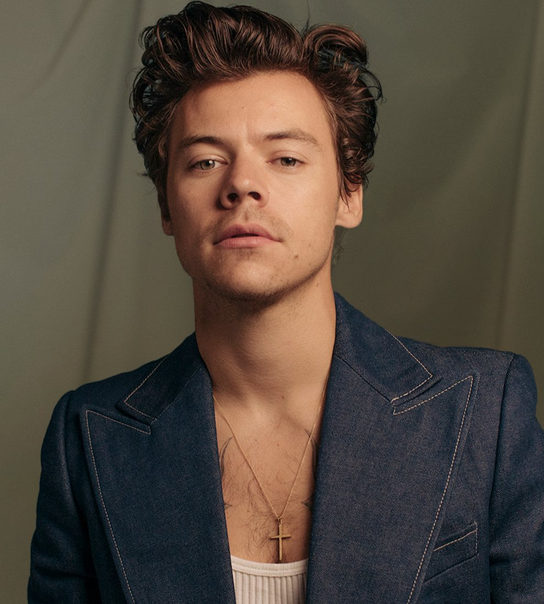

| Harry Edward Styles (Holmes Chapel, Cheshire; 1 de febrero de 1994) es un cantante, compositor y actor británico. Inició su carrera como cantante en 2010 como integrante de la boy band One Direction, con la que participó en el programa The X Factor y quedó en tercer lugar.
El cantante ha indicado que sus mayores influencias son las bandas The Beatles, Coldplay, el solista Elvis Presley y el actor David Hasselhoff.
Por otra parte, el cantante ha dicho que sufre de ofidiofobia (miedo a las serpientes) y su lema es «trabajar duro, jugar duro, ser amable».
Styles divide su tiempo entre dos casas en el norte de Londres, después de haber vivido en la zona de Sunset Strip en West Hollywood, California.Vendió su residencia en Los Ángeles, tras desilusionarse con la ciudad.También posee un apartamento tipo loft en Manhattan. |
 |
| En 2021, Harry Styles realizó un cameo en las escenas postcréditos de la película de Marvel: Eternals, interpretando el papel de Eros/Starfox, hermano de Thanos. Esta breve actuación dio a entender a los fans que el cantante podría interpretar dicho papel en futuros films de la franquicia, lo que iría acorde con la política de la compañía, que se sirve de las escenas post créditos para mostrar avances de próximos estrenos. |
| A finales de 2021, Harry Style lanzó, Pleasing, su propia línea de cosméticos cuya oferta arrancó con esmaltes de uñas, un serum iluminador y lápiz de ojos. |
Asimismo, este polifacético artista pretende seguir dándole vida a su carrera cinematográfica, pues aparece en el thriller psicológico: Don't Worry Darling, dirigida por Olivia Wilde y protagoniza la película romántica (con un triángulo amoroso bisexualI My Policeman, de 2022. |